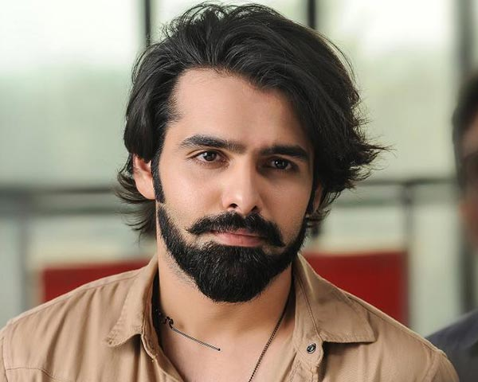

Hey there!
I'm Saranya Bhukya, a passionate computer science engineer from Hyderabad, India. Currently, I'm an undergrad student at Gayatri Vidya Parishad College of Engineering, diving deep into the world of code and algorithms. But when I'm not conquering coding challenges, you'll find me on the court, mastering the art of throwball.
Ram Pothineni Fangirl
Okay, let's be honest, I'm a total fangirl when it comes to Ram Pothineni! His charm, talent, and dedication are truly inspiring. I love watching his movies and cheering him on in all his endeavors.
